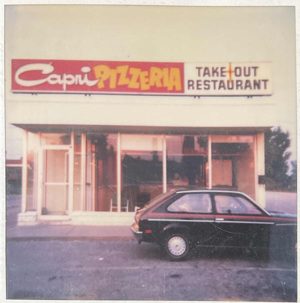
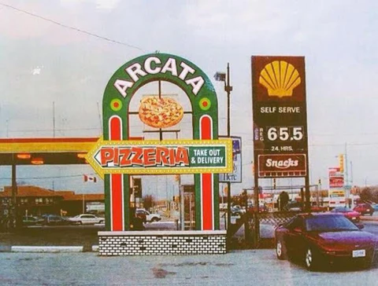
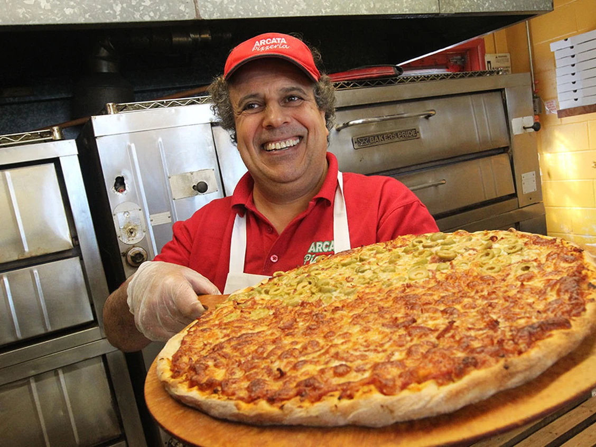
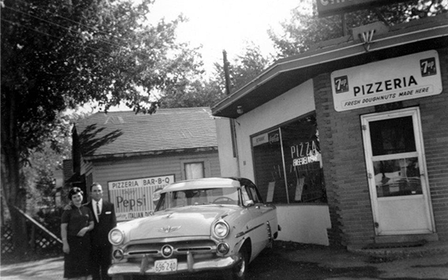
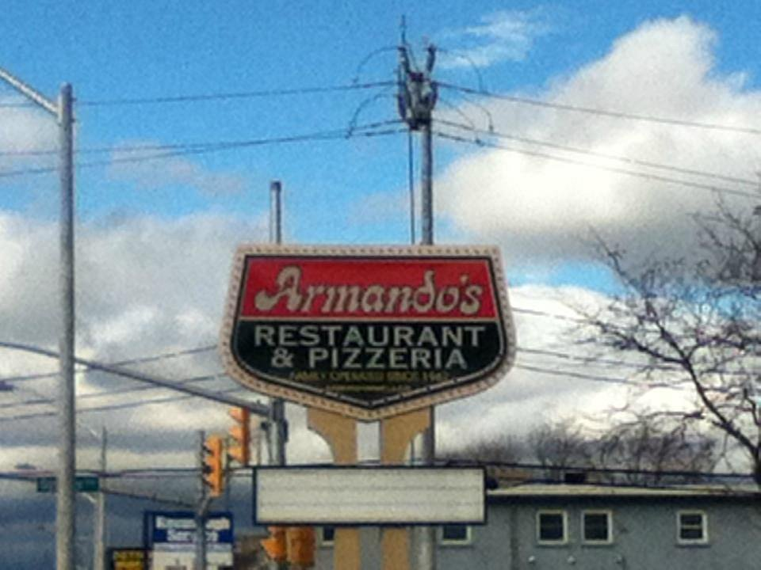
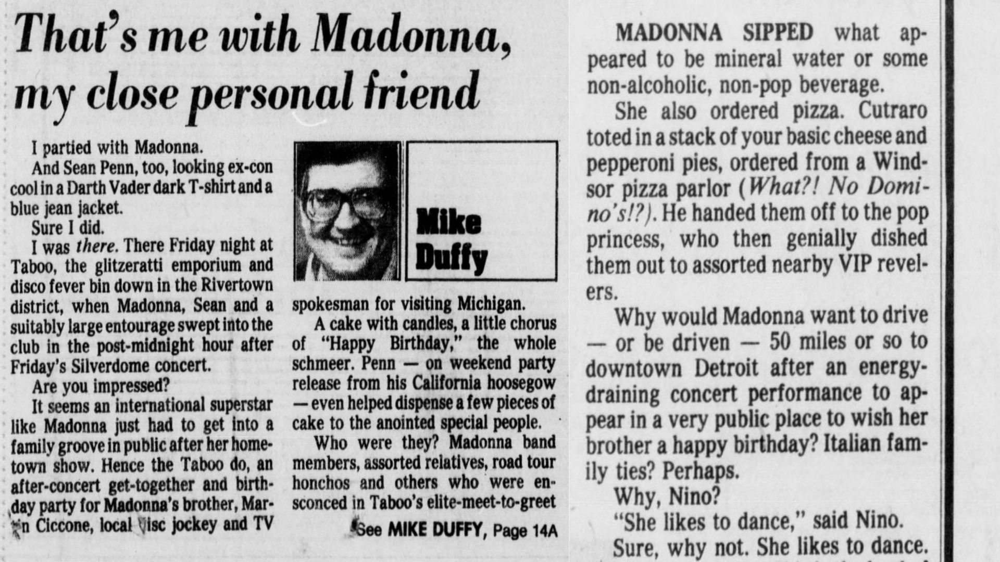

Windsor Pizzerias
Following the success of Volcanos Pizzeria, many pizzerias appeared in Windsor. Some of the Historic Pizzaerias in Windsor include Capri, Armando, Arcata, Naples, and Francos. The following section details the history of the pizza businesses that helped shape Windsor's pizza industry today. This section will detail the start of the businesses, who operated them, what made them unique, what contributed to their success, and their debated histories.
Begin Exploring
Dougall Rd being widened to two lanes, Capri's sign is seen on the left. Retrived from Capri Pizzeria.

Image of Bob Kalaydjian working at Capri in 1972. Retrived from Capri Pizzeria.

According to Capri this was their original location. In 1987 the location moved to 3020 Dougal Rd. Retrived from Capri Pizzeria.

Map of the 11 Capri Pizzeria locations (including the kiosk at St Clair College). Retrieved from Capri Pizzeria.
Capri Pizzeria
In 1959, Tony and Vita Ciaravino opened Capri, the first pizzeria in South Windsor, at 2525 Dougall Road. Joe Ciaravino notes that pizza was not initially the primary focus, and Capri differed significantly from its current form. Sometime in June of 1963, Capri moved to 3021 Dougall Road, according to an Ad in the Windsor Star. Tony and Vita managed Capri until 1967, when health concerns prompted them to sell the business to Dominique Vigneri, who operated it into the 1970s. In 1972 Vigneri moved Capri across the street to 3010 Dougall Rd. Meanwhile, Bob and Dorothy Kalaydjian gained business experience running Harveys on University Avenue. In 1972, Bob became interested in Capri after seeing a listing and, attracted by its business hours, began working with Vigneri. The purchase process began soon after, though the Windsor City Directories did not list the Kalaydjian family as owners until 1976, possibly reflecting a transition period and directory updates.
After taking ownership, Capri became a family-run business using the traditional Windsor-style recipe passed through generations. Bob expanded Capri with his family. In 1985, Capri opened its first franchise in Forest Glade to meet a growing customer base. By 1987, the original South Windsor location had expanded and moved next door to 3020 Dougall Road. During this period, Bob's son Kevin left for university to study economics but returned to work at Capri from the late 80s into the 90s. In 1995, Kevin began managing the main store; when business outgrew him, he brought in Jim Koumoutsidis, who had a restaurant background. Bob continued overseeing franchised locations. By 1997, Kevin and Jim managed all Capri locations.
Kevin emphasized that Capri’s commitment to quality has been fundamental to its success. The recipe has remained unchanged since the 1970s, catering to Windsor residents' preferences. Kevin explained that his customers know what Windsor-style pizza tastes like, and any change would be noticed. Over time, Kevin has noted that Capri attracts skilled and dedicated staff, which has contributed to a loyal customer base. The combination of quality, service, and teamwork among employees, managers, and owners has fostered Capri’s distinctive family-oriented atmosphere.
Although Capri has maintained its foundational values, the business has adapted to evolving market standards. In 1994, Capri introduced delivery and catering services. The menu was revised, with chicken wings replacing ribs, and the business implemented billboard and coupon advertising to remain competitive with other pizzerias. By 2009, Capri operated ten franchised locations. In 2016, a Capri Kiosk was established at St. Clair College to serve students, and the South Windsor Sport Arena was renamed the Capri Pizzeria Recreation Complex. Kevin Kalaydjian attributes Capri's distinctive pizza to the experience, quality, and pride the business upholds. Today, Capri has 11 locations in Windsor-Essex, including the kiosk at St Clair College.

Photo of the orginal quality of the Arcata Pizzeria Sign on 3021 Dougall Rd. Retrived from Rare Apperal.

Bob Abumeeiz, owner of Arcata Pizzeria on Dougall Avenue prepares a pizza on January 27, 2015. Retrived from Windsor Star.

Image of Arcata Pizzeria storefront. Retrieved from Instagram @halafoodjunkie.

Photo of current Arcata Pizzeria sign. The sign has detrioated over the years with age it has been granted protection as a neighbourhood landmark by the Windsor Municipal Heritage Register. Retrived from Rare Apperal.
Arcata Pizza
Antonino (Tony) Ciaravino continued leasing the building where Capri operated after selling the business to Dominique Vigneri. When Dominque decided to move the business across the street, Tony was unable to find a tenant, prompting him to attempt to launch a retail venture in the space. After this effort failed, Tony and Vita decided to return to what they knew best: Pizza. In 1972, they renovated the unit and opened Arcata Pizzeria. The Arcata location at 3021 Dougall Road has become a landmark, thanks to its towering red flashing sign. According to Joe Ciaravino, the sign was sketched using his cereal bowl. Arcata quickly became a family business for the Ciaravinos. However, by 1977, Tony’s health had rapidly declined, making it impossible to run Arcata. As a result, the decision was made to put the business and building up for sale.
Dimitrios (Jim) Roupas immigrated to Canada from Greece at the age of 25. According to Acarta's current owner, Bob Abumeeiz, Jim heard about a pizzeria in Windsor that needed help. Having a business background, Jim and his family moved from Nova Scotia to Windsor. Jim and his wife, Asimina, purchased Arcata in June of 1978, according to Joe and appeared on the city's directory in 1979. The Roupas lived in the unit above Arcata and were a hardworking family. The family would start work at 3 p.m. and leave at 2 a.m., with all four children working and learning the business. The Roupas are credited with turning Arcata into the pizzeria it is today, using recipes that stemmed from Volcano. Jim was successful due to his incredible palate, which enabled him to create delicious pizza. Jim, Asimina, and their family were incredibly proud of their business, which they ran for 18 years.
Bob immigrated to Canada in 1981 at a young age. While in college, Bob needed a part-time job, so he took a position at Domino's Pizza and worked there for several years as an assistant manager. Later, Bob managed a convenience store in Walkerville and learned the trade of running his own business. After several years, he was burnt out and in search of something new. After a month off, Bob returned to the pizza industry, which he was somewhat familiar with. He purchased Arcata from the Rupas after they announced their retirement in June 1996. The family stayed for a few years to teach him the ropes of Windsor-style pizza. Bob credits Asimina for setting Arcata up for success under his ownership. The Roupas stayed not only to help Bob but to ease their loyal customer base, who were nervous about an unfamiliar face making their food. Bob states that it was hard at first, but through hard work, he continued Arcata's legacy.
Bob has stated that the key to Arcata's success over generations has been hard work and dedication. Bob works tirelessly 7 days a week, open to close, because of his love and care for the pizza. Bob has worked to create and maintain the family environment at Arcata, employing an amazing staff of high school students who are like kids to him. This family environment is one that customers can see: positive energy and laughter, not screaming. Another pillar of Arcata's success, Bob highlighted, was the use of quality ingredients. Bob explained that Arcata uses cherry tomatoes (unique to Arcata) in their sauce because of their quality and freshness. In addition, Bob has adapted Arcata over the years to represent his customers. As Windsor's immigrant population grew, it reminded Bob of his arrival in Canada. Thus, Bob has added shawarma and tandoori chicken pizzas to Arcatas' menu to appeal to Arab and Indian immigrants. Although these pizzas may seem strange to traditional pizza lovers, Bob sees them as a way to connect with and welcome all Windsor residents to enjoy pizza and the community. Although operating only one location within Windsor-Essex County (a secondary location in Lakeshore that has since closed), Arcata has become a staple of the Windsor pizza industry, built on love, dedication, and a family environment.
Francos Pizza
Arcata Pizza, Capri, Armando's, Francos, Naples, and Antonino’s are long-standing, widespread pizza chains in Windsor, all with roots dating back to the 1950s and 1960s. Many of the Windsor pizzerias today trace back to Tony Ciaravino, who established the first pizzeria in South Windsor, Capri, on Dougall Rd. in 1959. Capri Pizzeria was a popular hangout for celebrities who performed at the Elmwood Hotel. Tony then went on to own Arcata in the sixties, where the owner of Antonino’s Pizza (created in honour of Tony) and Tony’s son, Joe Ciaravino, grew up. Tony held a firm foundation in three of the largest Windsor pizza companies: Windsor, Capri, Arcata, and Antonino’s.

Antonino and Vita Ciaravino in front of their original diner/pizzeria in Windsor, ON (Circa 1959).

Armando's Pizzeria Sign. Retrived from a review from James A.

Newspaper Ad in Windsor Star for Armandos Pizza in 1970.

Photo of Antonia and Armando by Rebbeca Wright. Retrived from Windsor Star.
Armandos Pizza
In the 1950s, Armando and Antonia Gerardi immigrated to Canada from Italy. Armando worked with his brother Filippo at the Italia bakery, while Antonia was a hairdresser. At 26, Armando dreamed of opening a pizzeria, so in 1967, Armando's Pizza began in an old fish shop on Walker Rd. They raised three kids in the shop's small apartment. He managed orders, made pizzas, and served a six-table dining room alone, with Antonia helping after her job. Their son Andre started making pizzas at five and perfected his skills at twelve. Eleven years later, they moved to a larger location at 3202 Walker Rd. Antonia recalled, "I cried when that little place closed... but we outgrew it—there just wasn’t enough space." Although coming from humble beginnings, the hard work and dedication of Armando and Antonia encouraged Armando's success. Customers were welcomed to a family environment that produced quality pizza, which helped encourage its expansion.
In 1996, John Pizzo answered an ad in the Windsor Star for a pizza maker, which led him to meet Gerardi’s daughter Josie. A year later, they were married. After working at Armando’s for four years, John opened Armando’s second location on Cabana Rd. Building on this growth, Armando's expanded with a third location in Tecumseh around 2004 and later franchised it. By 2006, following Antonia and Armando’s retirement, their son, Andre, and son-in-law, John, took over the business. For Andre, honouring his parents translated into expanding the business across Ontario, and since 2006, he and John have pursued franchising Armando’s locations.
Today, John Pizzo is president of Armando’s Pizza, and Andre serves as vice president, overseeing 12 locations. Transitioning from the family’s involvement, the pair offers owners freedom while requiring adherence to the signature pizza recipes. John and Andre believe that allowing each restaurant its own identity brings success and variety to customers. Armando gained international recognition in 2014 at the Las Vegas Pizza Expo, with four pizzas placing in the top five of their divisions. Operating as dine-in, takeout, delivery, and catering, Armando’s employs over 400 full- and part-time staff. The business, rooted in a family environment, has expanded Windsor's pizza legacy across Windsor, Essex, and into America with a location in Michigan.
Naples Pizza
From Volcanos to the many notable pizzerias of the 1950s to 60s, these pizzerias established a clear identity shared by the people of Windsor and across the border in Detroit. For example, a 1987 Detroit Free Press newspaper explains how Madonna ordered an authentic Windsor Pizza after a show in Detroit. Additionally, in a 1993 Detroit Free Press article, a former Windsor resident wrote to find a Windsor-style pizza in Detroit, like Franco's Pizza, with zesty sauce and generous toppings, not floppy like Detroit Pizza.
These early-established Windsor pizzerias were founded by Italian families, starting with Volcano Pizzeria, which inspired other family-owned Windsor-style pizzerias. As noted in the newspaper articles, Windsor Pizza was influential among Windsor citizens and carried its notoriety across the border, helping establish Windsor as a distinct identity following World War II. Starting with Volcanos, a culture of hard work, family environments, strong customer relationships, quality service, and distinct ingredients made the industry successful.

This article was published in a 1987 copy of the Detroit Free Press. The article was written by Mike Duffy and detailed a party he was at with popstar Madonna. “If Madonna Parties, the World Parties Too,” Detroit Free Press (Detroit, Michigan), August 9, 1987.

This newspaper clipping is part of the Eating Well colum of the Detroit Free Press's food section. In this section of the colum a former Windsor resident is looking for a quality pizza in Detroit. John Tanasychuck, “Help a Windsor Pizza Fan,” Detroit Free Press (Detroit, Michigan), June 16, 1993.